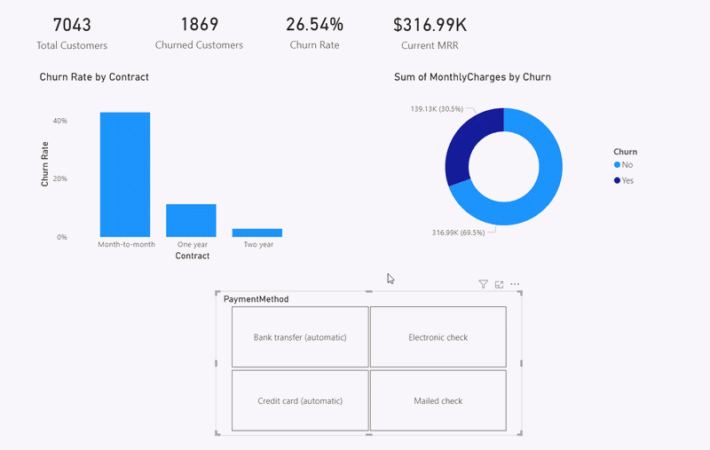
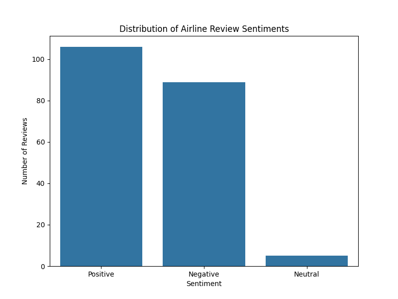
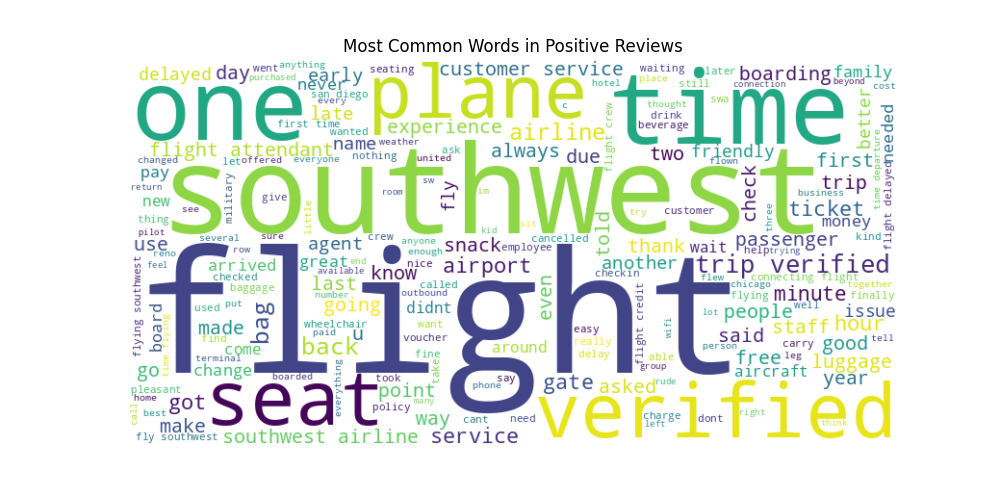
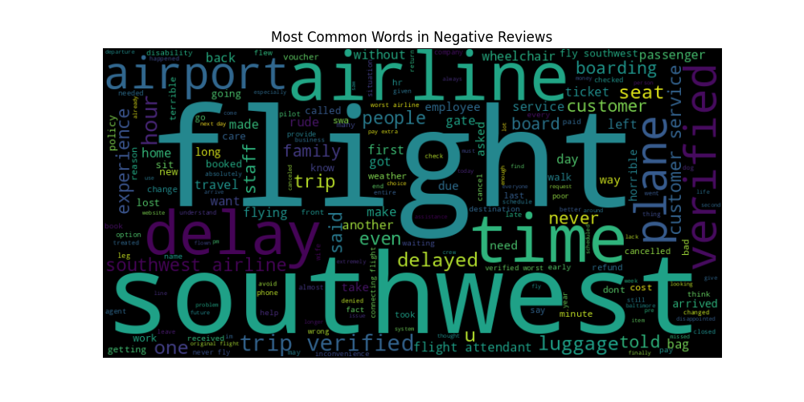

Featured Projects
Dual-Lens Analytics: SaaS Customer Churn
Analyzed 7,000+ telecom records to identify revenue leakage. Built a financial operations model in Power BI using DAX, and a demographic cohort tracker in Tableau using LOD expressions.
The Operational View (Power BI)
Tracking MRR impact and contract risk via advanced DAX.

The Customer Story (Tableau)
Visualizing demographic churn risk and cohort timelines.

End-to-End NLP: Airline Sentiment Analysis
Engineered an automated Python pipeline to scrape thousands of customer reviews, process the natural language data, and classify sentiment to uncover drivers of customer satisfaction.
Data Pipeline & NLTK Processing
Built a custom web scraper using BeautifulSoup to extract Southwest Airlines reviews. Cleaned the text using Regex and lemmatization, then applied NLTK's VADER model to score compound sentiment.

Sentiment Word Clouds
Visualized the most frequent terminology driving positive vs. negative customer experiences using Matplotlib and Seaborn.


Other Work
Additional Project Title
A brief description of the project. Explain what problem it solves and what technologies you used.
View Project